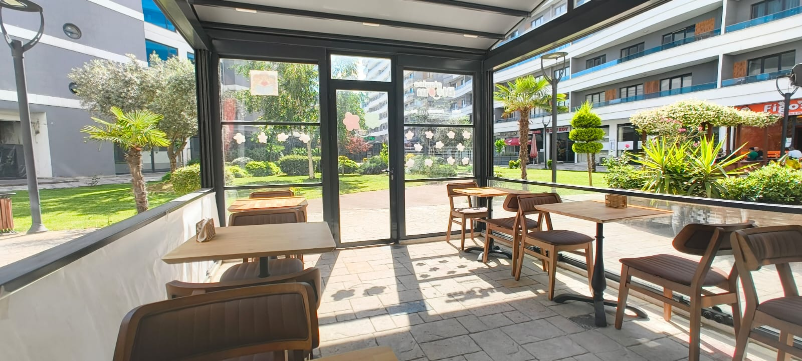
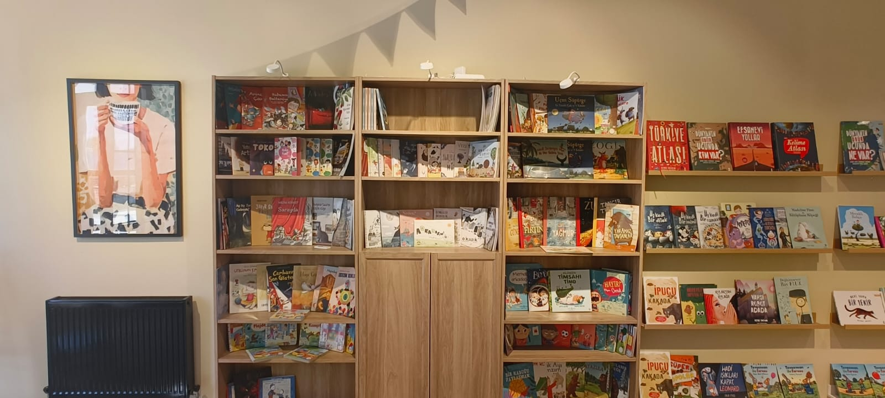
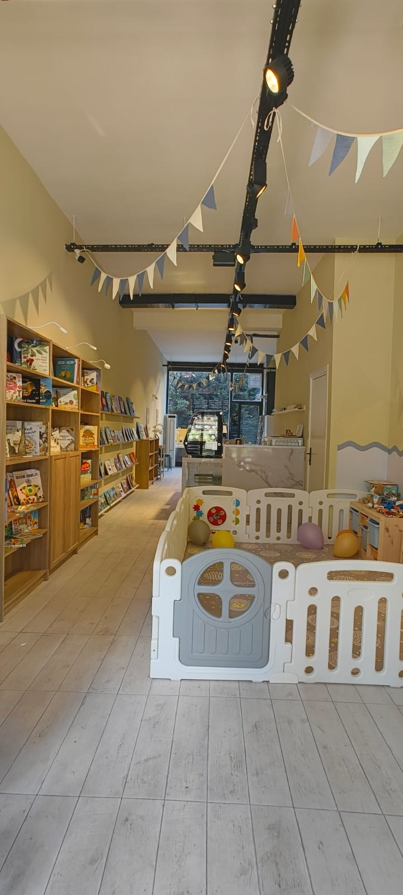

Kurtköy artık açık: çocuk kitapçısı, aile kafesi ve kitaplardan doğan küçük deneyimler.Kurtköy is now open: children’s bookshop, family café and small experiences born from books.
Kadıköy aile gelişim merkezi · Kurtköy çocuk kitapçısıKadıköy family development centre · Kurtköy children’s bookshop
Yetişkinler nefes alır. Çocuklar büyür. Birlikte, aynı yerde.Grown-ups breathe. Children grow. Together, in one place.
Giggles & Bloom, çocukların oynayıp büyüdüğü; yetişkinlerin nefes aldığı, çalıştığı, bağ kurduğu ve destek bulduğu sıcak bir üçüncü alandır. Oyun, BloomLab, kitaplık, kafe, çalışma, etkinlik ve topluluk tek bir gerçek mekân ritminde buluşur.Giggles & Bloom is a warm third place where children play and grow while grown-ups breathe, work, connect and feel supported. Play, BloomLab, books, café, workspace, events and community meet in one real-world rhythm.
Maya ve kardeşi kütüphane köşesinde birlikte kitap okuyor.Maya and her little brother are reading together in the library nook.
Kitaplardan DeneyimeFrom Books to Experiences
Kurtköy — Çocuk Kitapçısı ve Aile Kafesi. Her hafta seçili kitaplar bir Hikâye Durağına dönüşür; Mini Oyun ve atölyeler bu ritmi destekler.Kurtköy — Children’s Bookshop and Family Café. Each week, selected books become a Story Stop; Mini Play and workshops support that rhythm.
Rezervasyon, kitap ödünç, etkinlik kaydı ve aile hesabı gibi pratik işler — üye portalımızda.Bookings, book loans, event registration and family account basics — in your member portal.
Bugün hangi G&B ritmi size daha uygun?Which G&B rhythm fits your family today?
İki şube aynı aile vizyonunu taşır, ama ilk ziyaret nedeni farklıdır. Kadıköy daha büyük ve program odaklıdır; Kurtköy çocuk kitapçısı, aile kafesi ve kitaplardan doğan küçük deneyimlerle başlar.Both branches carry the same family vision, but the first reason to visit is different. Kadıköy is larger and programme-led; Kurtköy starts with the children’s bookshop, family café and small experiences born from books.
Flagship aile gelişim merkeziFlagship family development centre
Daha geniş oyun, BloomLab atölyeleri, seri programlar, çalışma alanı, yazar günleri ve büyük aile/topluluk etkinlikleri için ana merkez.The fuller centre for larger play, BloomLab workshops, structured series, workspace, author days and bigger family/community events.
Çocuk kitapçısı ve aile kafesiChildren’s bookshop and family café
Kitaplardan Deneyime: seçili çocuk kitapları, Hikâye Pasaportu, haftalık Hikâye Durağı, aile kafesi, Mini Oyun Köşesi ve küçük kitap deneyimleri.From Books to Experiences: selected children’s books, Story Passport, weekly Story Stop, family café, Mini Play Corner and small book-led experiences.
4mini oyunmini play5BloomLab4çalışmawork
Çocuk kitapçısı + aile kafesiChildren’s bookshop + family café
Hikâye Pasaportu ve haftalık temaStory Passport and weekly theme
Mini oyun ve deneyimler destekleyiciMini play and experiences as support
Gerçek mekân, gerçek toplulukReal spaces, real community
Kadıköy ve Kurtköy merkezleri günlük hayata doğalca karışacak şekilde tasarlandı: kapıdan gir, çocuklar güvenli ve yaşlarına uygun bir akışta olsun, yetişkinler de nefes alsın, çalışsın, okusun ya da topluluğa katılsın.Kadıköy and Kurtköy are designed to fit naturally into daily life: walk in, let children settle into a safe age-aware rhythm, and use the space to breathe, work, read or join the community.

Kafe ritmiCafe rhythmYetişkinler nefes alırken günlük buluşmalarEveryday gatherings while grown-ups breathe

KitaplıkBooksÇocuk kitapları, ödünç kitap ve yazar günleriChildren's books, lending library and author days

Mini oyunMini playKitap, oyun ve sakin keşif bir aradaBooks, play and calm discovery together
Aileler için yeni bir üçüncü alanA new third space for families
Birinci yer ev. İkinci yer iş ya da okul. Üçüncü yer, ailelerin nefes aldığı, çocukların oynadığı ve topluluğun doğal şekilde kurulduğu yerdir. Giggles & Bloom bu ihtiyacı sıcak, yapılandırılmış, uzman destekli ve yargısız bir aile alanı olarak karşılamak için tasarlandı.First place is home. Second place is work or school. A third place is where families breathe, children play, and community forms naturally. Giggles & Bloom is designed to meet that need as a warm, structured, expert-supported and judgment-free family space.
G&BThird Space
FarkımızOur Difference
Bizi fark yaratan 6 şeySix things that set us apart
İstanbul'da pek çok oyun kafesi var. Biz oyun kafesi değiliz.There are many play cafés in Istanbul. We are not a play café.
Uzman seri atölyelerExpert series workshops
İlk sezon programlarımız oyun, STEM, hikâye, sanat, sosyal-duygusal gelişim ve aile bağını bir araya getirir. Her atölye kapasite, yaş uygunluğu ve lider uygunluğu ile açılır.Our first-season programmes bring together play, STEM, story, art, social-emotional growth and family connection. Each workshop opens according to capacity, age fit and facilitator availability.
Tuğla temelli inşa ve yansıtmaBrick-based building and reflection
Little Builders, Build & Tell, Feelings in 3D ve Family Helper Machine: çocuklar ve aileler fikirlerini, duygularını ve hikayelerini blok ve modelle somutlaštırır.Little Builders, Build & Tell, Feelings in 3D and Family Helper Machine: children and families give shape to thoughts, emotions and stories by building them.
Ebeveyn ve çocuk için — aynı andaFor parent and child — at the same time
Çalışma istasyonları, kadın iyilik çemberleri, babalar akşamları — çocuğunuz oynarken siz de gelişiyorsunuz.Working stations, women's wellbeing circles, fathers' evenings — while your child plays, you grow too.
Gerçek topluluk — sosyal medya değilReal community — not social media
Babalar akşamı, büyükanne çemberi, çok kültürlü etkinlikler, yeni anneler grubu. Gösteriş için değil, bağlantı için.Fathers' evenings, grandparent circles, multicultural events, new mothers' support groups. For connection, not performance.
Kapsayıcı tasarım — ilk günden beriInclusive design — from day one
Duyusal hassasiyetleri olan çocuklar ve aileler için daha sakin akış, açık kurallar ve gerektiğinde düşük uyaranlı seçenekler tasarlarız.For children and families with sensory sensitivities, we design calmer flow, clear rules and lower-stimulation options where possible.
Social Lab — topluluktan öğrenen alanSocial Lab — community-informed learning
Aile yaşamından öğrenen, mahremiyeti koruyan ve atölye, destek ve topluluk programlarımızı gerçek ihtiyaçlarla geliştiren alan.A space that learns from family life, protects privacy and improves our workshop, support and community programmes around real needs.
Beş dünya, tek aile ritmiFive worlds, one family rhythm
Ana sayfa bilinçli olarak sade kalır; her dünya kendi sayfasında daha fazla detay, şube notu ve canlı bilgiyle açılır.The homepage stays intentionally simple; each world opens into its own page with more detail, branch notes and live information.
Nasıl çalışır?How it works
Tek mekân, birbirine bağlı deneyim dünyaları.One place, connected experience worlds.
Bir ziyaret oyunla başlayabilir, kitaplıkta sakinleşebilir, BloomLab atölyesine dönebilir, bir etkinliğe bağlanabilir ya da üye portalında planlanabilir. Dünyalar ayrı sayfalar gibi görünür; gerçekte aynı günlük ritmi taşır.A visit can begin with play, slow down in the library, turn into a BloomLab workshop, connect to an event, or be planned through the member portal. The worlds have separate pages; in real life they support one daily rhythm.
Giggles: OyunGiggles: Play
Giggle Garden, Giggle Kıvılcımları ve Mini Giggle Atölyeleri: hareket, keşif, kısa rehberli anlar ve şube kapasitesine göre oyun ritmi.Giggle Garden, Giggle Sparks and Giggle Minis: movement, discovery, short guided moments and branch-aware play rhythm.
BloomLab Özel Atölyeleri, BloomLab Serileri ve Bloom Çemberleri: hikâye, doğa, üretim, sakinlik, ses, yansıtma ve aile gelişimi.BloomLab Special Workshops, BloomLab Series and Bloom Circles: story, nature, making, calm, voice, reflection and family development.
Social Lab, soru ve Bilgi Merkezi, Mahalle Çemberi: ailelerin günlük hayatından öğrenen, yargısız ve rızaya dayalı destek katmanı.Social Lab, Ask & Knowledge Centre and Neighbourhood Circle: a consent-led, non-judgemental layer that learns from everyday family life.
Çalışma noktaları ve etkinlik akışları: Kadıköy'de 8, Kurtköy'de 4 çalışma istasyonu; özel doğum günleri, topluluk etkinlikleri ve herkese açık buluşmalar.Work points and event rhythms: 8 work stations at Kadıköy, 4 at Kurtköy, plus private birthdays, community gatherings and open meetups.
Kitapçı, ödünç kitaplık, yazar günleri, sağlıklı kafe/restaurant ve şube ritmini taşıyan aile yemekleri. Bunlar yan iş değil; üçüncü alanın kalbidir.Bookshop, lending library, author days, healthy café/restaurant and family food that supports the branch rhythm. These are not side businesses; they are part of the third-place core.
Üye portalı gerçek şube deneyimini destekler: rezervasyon, etkinlik kaydı, kitap ödünç, aile hesabı ve izin/mahremiyet bilgileri. Daha derin özellikler canlı oldukça ayrıca anlatılır.The member portal supports the real branch experience: bookings, event registration, book loans, family account and consent/privacy details. Deeper features are introduced only as they go live.
Ne nerede daha güçlü?What each branch is built for
Bu rakamlar başlangıç planlama kapasitesidir. Günlük ekip, yaş uygunluğu, güvenlik akışı, özel etkinlik düzeni ve rezervasyon durumuna göre son uygunluk ekip tarafından onaylanır.These are starting planning capacities. Final availability depends on staff, age suitability, safety flow, event setup and current bookings.
Kadıköy
Tam aile deneyimi merkeziFull family-experience centre
Oyun alanı: 8 çocukPlay area: 8 children
Mini Giggle / oyun atölyesi: 6 çocukGiggle Minis / play workshop: 6 children
Ailenize özel bir paket varThere's a plan for your family
Beş üyelik paketi, beş farklı aile ritmi için. Canlı paket bilgileri webapp üzerinden güncellenir; haklar aylık sıfırlanır, devretmez ve kullanım kapasite/uygunluk koşullarına bağlıdır.Five membership tiers for five different family rhythms. Live package details are updated through the webapp; benefits reset monthly, do not roll over, and depend on capacity and availability.
Flex AileFlex Family
Canlı detaylarLive details
Hafif kullanım, gerçek aidiyet. Esnek programlama isteyenler için.Light use, real belonging. For flexible scheduling families.
Üye erişimi ve dönemsel avantajlarMember access and seasonal advantages
Esnek rezervasyon ritmiFlexible booking rhythm
Kafe ve etkinliklerde üye fiyatıMember pricing for café and events
G&B'yi tam bir aile işletim ortağı olarak isteyen aileler için — geniş kapsam ve adil kullanım.For families who want G&B as a full family operating partner — broad access with fair-use rules.
En geniş üyelik kapsamıBroadest membership scope
Kitaplık, etkinlik ve atölye avantajlarıLibrary, event, and workshop advantages
Öncelikli davetler, uygunluğa bağlıPriority invitations, subject to availability
Adil kullanım ve kapasite kurallarıFair-use and capacity rules apply
Ebeveynin görünmez yükünü azaltmak için tasarlandı: çocuk güvenli ve yaşına uygun bir akıştayken ebeveyn çalışabilir, dinlenebilir veya toplulukla bağ kurabilir.Designed to lighten the invisible load: while a child follows an age-aware and safe rhythm, a parent can work, rest, or connect with community.
Nefes alan ebeveynlerParents who can pause
Çalışma alanı, kafe ve günlük destekWorkspace, café, and everyday support
Çocuklar için oyun, kitap ve atölye akışları; aileler içinse anlaşılır üyelik, rezervasyon ve ziyaret deneyimi. Amaç gösterişli olmak değil, günü kolaylaştırmak.Play, books, and workshop rhythms for children; clear membership, booking, and visit flows for families. The goal is not spectacle, but making the day easier.
Ritmi olan çocuklarChildren with rhythm
Oyun, kitaplık ve atölyelerPlay, library, and workshops
Social Lab, aile yaşamından öğrenen ve programlarımızı gerçek ihtiyaçlarla geliştiren, rızaya dayalı topluluk öğrenme alanımızdır. Ailelerin mahremiyeti, açık rıza ve çocuk güvenliği her çalışmanın sınırını belirler.Social Lab is our consent-led community learning space that improves programmes around real family needs. Family privacy, explicit consent and child safety set the boundary for every activity.
Güven ve öğrenmeTrust and learning
Social Lab ve topluluk çalışmalarıSocial Lab and community work
G&B Journal’dan son yazılarLatest from G&B Journal
Kaynaklı, iki dilli ve insan onayından geçmiş kısa rehberler: oyun, kitaplar, aile ritmi ve topluluk.Sourced, bilingual, human-reviewed guides on play, books, family rhythm and community.
Journal yükleniyor...
Family OS — Üye Portali CanlıFamily OS — Member Portal Live
Gerçek mekân deneyiminin dijital katmanıThe digital layer for the real-world experience
Family OS, gerçek mekândaki G&B deneyimini düzenleyen dijital katmandır: rezervasyon, üyelik, isteğe bağlı çocuk profilleri, kitap ödünç, etkinlik kaydı ve izin/mahremiyet bilgilerini daha anlaşılır tutar. Daha derin ritim ve destek araçları dikkatle, rızaya dayalı olarak büyütülür.Family OS is the digital layer that helps coordinate the real-world G&B experience: bookings, membership, optional child profiles, book loans, event registration and consent/privacy details. Deeper rhythm and support tools will grow carefully and consent-led.
Kurtköy artık açık; çocuk kitapçısı ve aile kafesi her gün, Mini Oyun ve kitap deneyimleri kapasiteye ve günlük programa bağlıdır.Kurtköy is now open; the children’s bookshop and family café are everyday anchors, while Mini Play and book-led experiences depend on capacity and the daily programme.
Topluluğumuza katılınJoin our community
İstanbul'da aileler için sıcak, yapılandırılmış bir topluluğun parçası olun. Aylık üyelik, açık kullanım koşulları ve ekip desteğiyle.Become part of a warm, structured community for families in Istanbul. Monthly membership, clear usage terms, and team support.